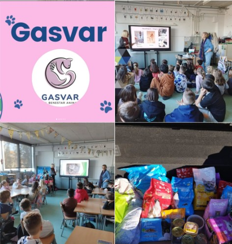

Quienes somos
La Asociació GASkikujVAR es una entidad sin ánimo de lucro fundada en 2016 en Montornès del Vallès (Barcelona) dedicada al cuidado, protección y control ético de gatos comunitarios mediante el método CER (Captura, Esterilización y Retorno) y protección animal.
¿Por qué mi mascota huele mal?

Cuidados en los perros Ancianos